This week's goal was to design, laser cut, assemble, and document a parametric construction kit that accounts for laser kerf. I worked with a partner, and we each document the project in our own portfolio. Our kit is a lamp diffuser: a shade cut from a 3 mm wood sheet that slides together with press-fit tabs and slots and sits on a 3D printed base that holds the light source. The shade has to spread the light that travels upward from the base and diffuse it gently outward. The kit has 3 unique laser cut part types (a big ring, a small ring, and a column) and 8 laser cut pieces in total (2 big rings, 2 small rings, and 4 columns).
The engineering anchor for the week is Genichi Taguchi's robust design. The joints should not just fit once. They should fit across the whole sheet, even though the kerf, the thickness of the wood, the focus, and the position on the bed all vary. So the work is organized the way the lab asks: measure the material and the kerf, run a fit test, choose the clearance, and then cut the final kit.
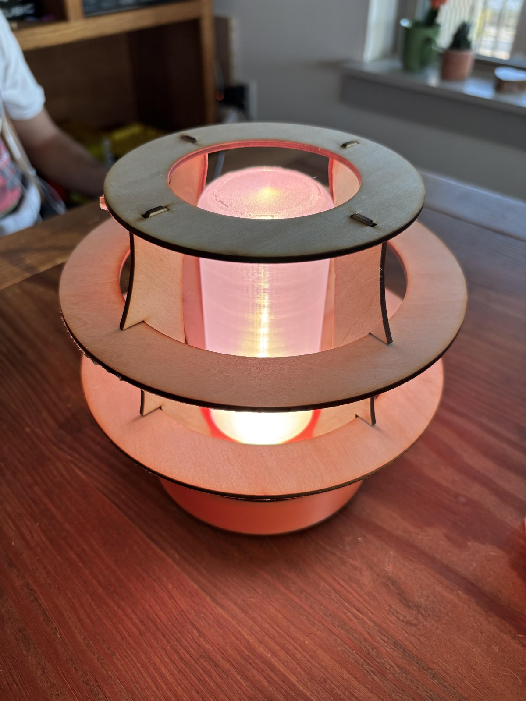
The finished lamp with the light on. The curved columns hold the rings in place with tabs and notches, and the light shines through the open shade and the translucent cylinder in the middle.
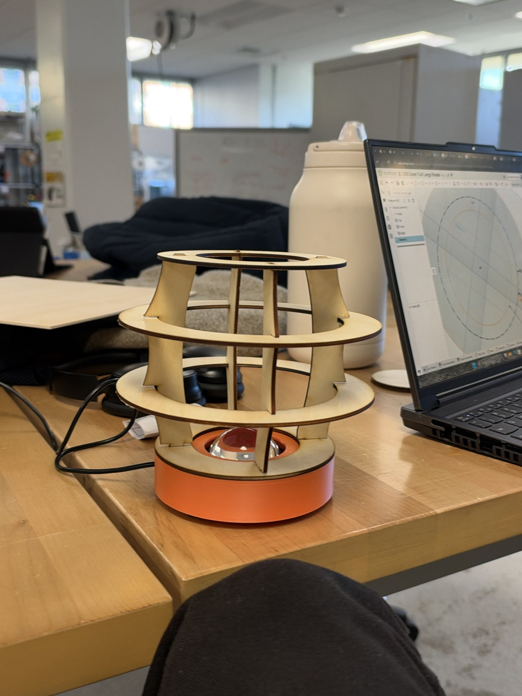
Light off, bright room: with the light off, the shade is plain wood and you can see how the columns, notches, and rings fit together.
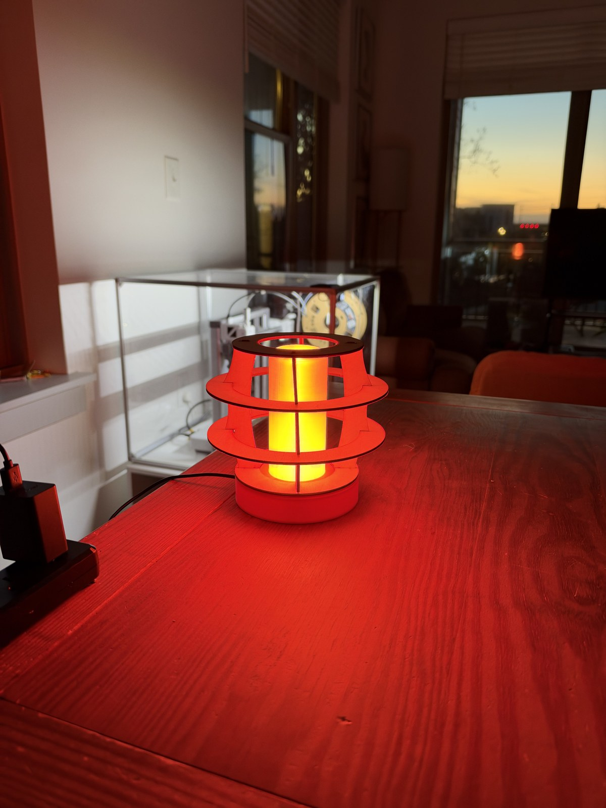
Light on, dark room: the light passes through the open shade and the translucent cylinder and spreads outward across the table.
The concept work was done in Onshape. The goal at this stage was to work out how all of the pieces would be constrained, and to make sure every part could be cut from the 12 × 12 in sheet we were given. The final design work was done in SolidWorks, where I worked on the aesthetics, the clearances, and the kerf values. Both models were built parametrically.
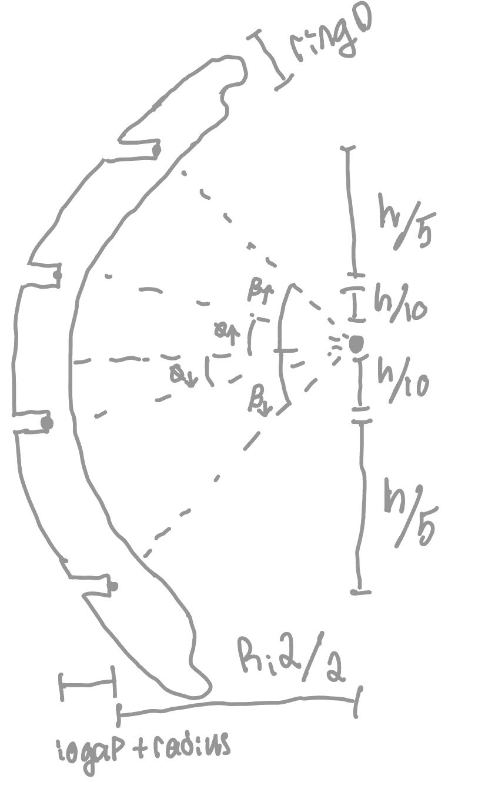
This hand sketch is where I got the parameters for the test part. It divides the shade height, h, into bands above and below the light source and shows the angles from the light source to the rings, so that ring positions and diameters could be written in terms of a small number of parameters. I also exported it as a PDF: Hand sketch of the shade parameters (PDF).
| Part | Qty | Function | Made by |
|---|---|---|---|
| Big ring | 2 | The two wide middle rings. They give the shade its outward flare and sit in the notches of the columns. | Laser cut, 3 mm wood |
| Small ring | 2 | The top and bottom rings. Each has 4 slots that the column tabs press into. | Laser cut, 3 mm wood |
| Column | 4 | The curved uprights. A tab at each end goes through a slot in a small ring, and two notches hold the big rings. | Laser cut, 3 mm wood |
| Base, base top, and light stem | 1 each | Hold the light source and set the diffuser on the table. The stem is the translucent cylinder in the middle of the shade. | 3D printed |
The kit therefore meets the requirements: 3 unique laser cut part types, 8 laser cut pieces, and press-fit tab and slot connections between the columns and the rings.
The first model is the test design from Onshape. Its job was to fix the layout and the parameters, and it gave me the test sheet for the kerf and fit tests.
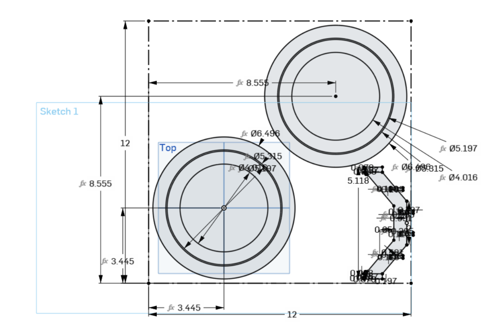
Test sheet sketch: two ring sets placed on the diagonal of the 12 × 12 in sheet, with the test uprights packed along the right edge.
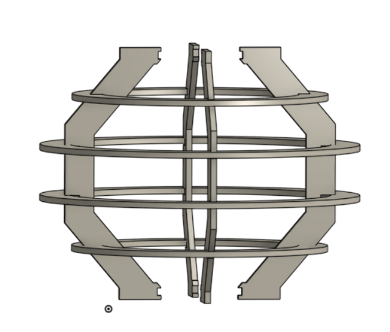
Test assembly: the test shade used four rings and a very different upright geometry from the final one, but the final design kept most of the math that made the test part parametric.
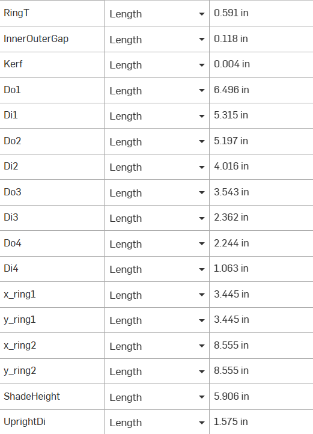
Test variable table: the test design was driven by a small set of variables, including the inner-to-outer ring gap and the kerf.
The final model is in SolidWorks. Each part is shown below.
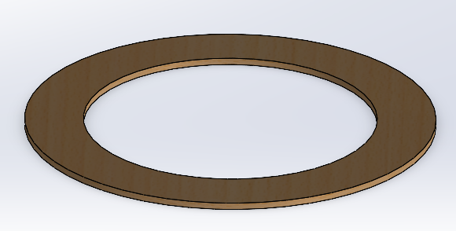
Big ring: a flat ring with no slots. The columns hold it in their notches.
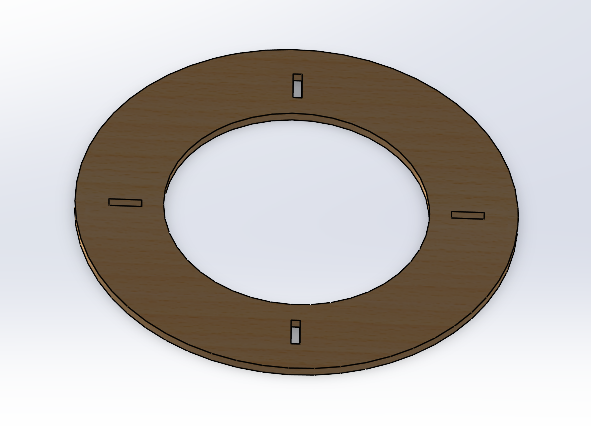
Small ring (top and bottom): a flat ring with 4 slots, one every 90 degrees, for the column tabs.
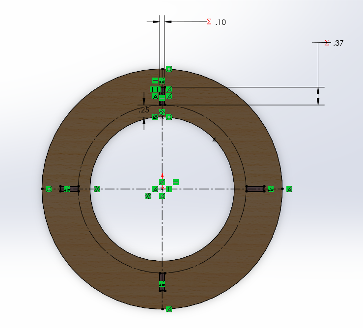
Small ring sketch: the slot dimensions in the sketch are driven by the global variables, not typed in.
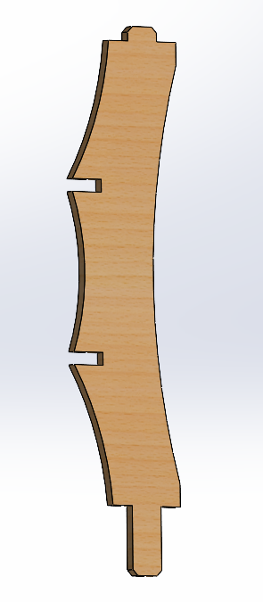
Column: a curved upright with a tab at each end and two notches on the concave side.
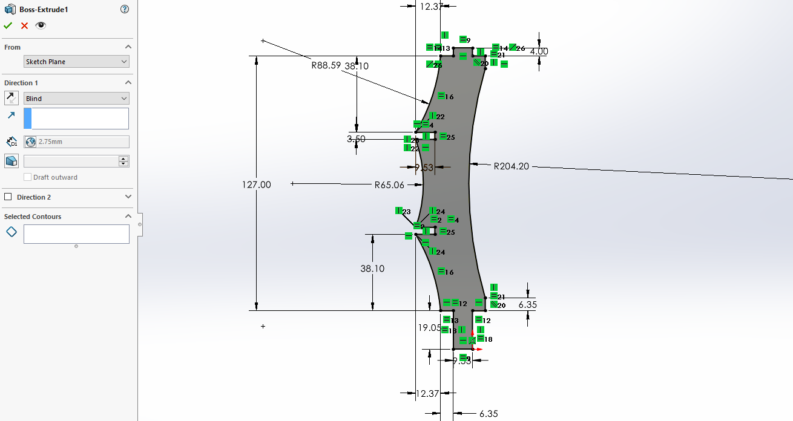
Column sketch and extrusion: the column is extruded 2.75 mm, which is the plate thickness variable.
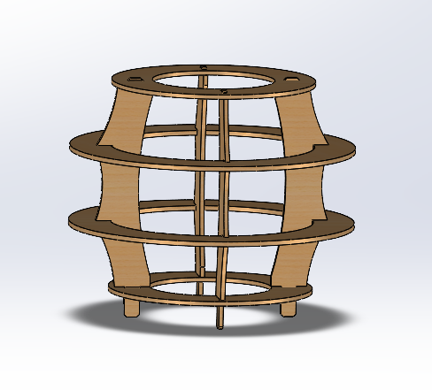
Laser cut parts assembled: the 8 wood pieces together, before the printed base.
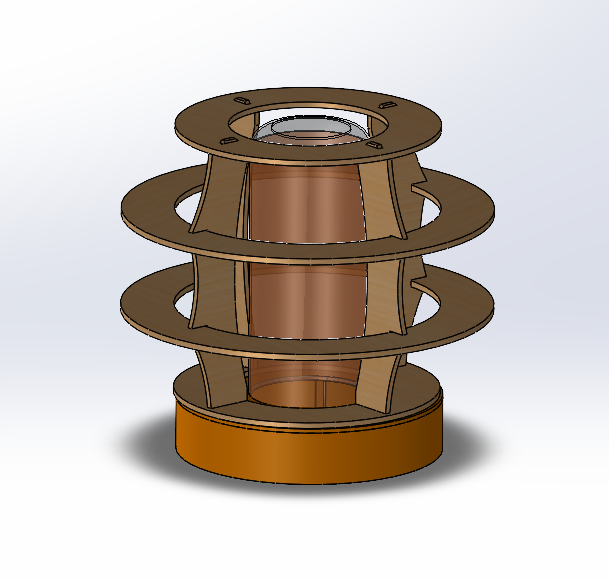
Full assembly with the printed base.
| Variable name | First cut (fit too big) | Final | Units | Source (measured or chosen) | What it controls |
|---|---|---|---|---|---|
| PlateThickness | — | 2.75 | mm | Measured (Step 1) | Extrusion depth of every wood part, and the base for the width of every slot and notch |
| Kerf | — | 0.15 | mm | Measured (Step 2): mean of X 0.11 mm and Y 0.19 mm | How much narrower the slots are drawn than the plate |
| Clearance | — | 0.005 | mm | Chosen (Step 4) | Extra room added to the slots on top of the kerf allowance |
| Ring slot width (SlotH in the ring file) | 2.85 | 2.605 | mm | Calculated: PlateThickness + clearance − Kerf | Narrow side of the slots the column tabs press into |
| Ring slot length (SlotW in the ring file) | 9.37 | 9.38 | mm | Calculated: w − Kerf + clearance, with w = 3/8 in (9.525 mm) | Long side of the slots the column tabs press into |
| Column notch width (SlotW in the column file) | 3.50 | 2.60 | mm | Calculated: PlateThickness − Kerf | Width of the notches that hold the big rings |
| Big ring outer and inner diameter | 177.8 and 127.0 | mm | Chosen (7.0 in and 5.0 in) | Size of the two wide middle rings | |
| Small ring outer and inner diameter | 127.0 and 76.2 | mm | Chosen (5.0 in and 3.0 in) | Size of the top and bottom rings, which nest in the big ring's opening | |
The first-cut slot values are the dimensions in the DXF files we cut from first. The fit was too big, so we scaled the slots down through the equations to the final values, which are the ones in the equations screenshots in the next section.
All of the slot dimensions come from the global variables below, so changing the thickness, the kerf, or the clearance regenerates every slot. These screenshots show the equations with the final values.
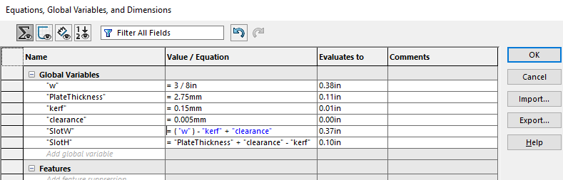
Global variables for the rings: the slot length, SlotW, and the slot width, SlotH, are equations of w, PlateThickness, kerf, and clearance.
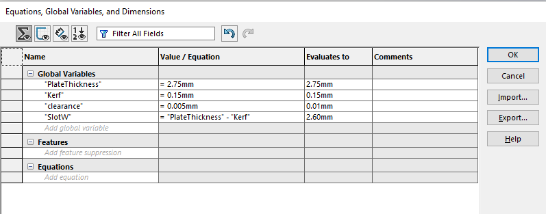
Global variables for the columns: the notch width is the plate thickness minus the kerf.
What changes when I change the thickness variable. The first sheet I measured had a mean thickness of 2.88 mm, and the final sheet is 2.75 mm. Setting the variable to each value updates the dimensions like this (calculated from the equations above, with a clearance of 0.005 mm):
| PlateThickness | Column notch width (PlateThickness − Kerf) | Ring slot width (PlateThickness + clearance − Kerf) | Ring slot length |
|---|---|---|---|
| 2.88 mm | 2.73 mm | 2.735 mm | 9.38 mm (no change) |
| 2.75 mm (final) | 2.60 mm | 2.605 mm | 9.38 mm (no change) |
Material thickness. I measured the sheet with calipers in 3 places and used the mean, because a sheet labeled 3 mm rarely measures 3 mm.
| Measurement # | 1 | 2 | 3 | Mean |
|---|---|---|---|---|
| Thickness of the first sheet (mm) | 2.88 | 2.80 | 2.96 | 2.88 |
By the time we cut the final parts we were using a different wood, which measured between 2.70 and 2.80 mm. I set PlateThickness to 2.75 mm, the middle of that range. Because the model is parametric, the change was one number.
Kerf. I measured the kerf with a square coupon, D × D, cut on the laser cutter. I chose D = 30 mm. I measured the square with calipers in the X and Y directions and calculated the kerf as D minus the measured width, three times in each direction.
| Kerf measurement # | 1 | 2 | 3 | Mean |
|---|---|---|---|---|
| X direction | 0.11 mm | 0.10 mm | 0.12 mm | 0.11 mm |
| Y direction | 0.17 mm | 0.21 mm | 0.19 mm | 0.19 mm |
The kerf in the Y direction is about 0.08 mm larger than in the X direction. I used the average of the two, 0.15 mm, as the kerf variable.
Slot and tab dimensions. The laser removes a strip of material, the kerf, along every path. A slot drawn at the plate thickness would therefore cut out wider than the plate, and the joint would be loose. So each slot is drawn narrower than the plate by the kerf, and the clearance is added on top. The final values are a column notch of 2.60 mm (2.75 − 0.15), a ring slot width of 2.605 mm (2.75 + 0.005 − 0.15), and a ring slot length of 9.38 mm (3/8 in minus the kerf plus the clearance). I kept the clearance at 0.005 mm because the wood is soft and compliant, so a tight fit seats without cracking it.
Our first cut used larger slots: 2.85 mm wide by 9.37 mm long for the rings and a 3.50 mm notch in the columns. The fit was too big, so we scaled the slots down through the parametric equations. The fit coupon showed that the 2.6 mm slot, which is the plate thickness minus the kerf, gave the target fit.
A laser cutter focuses a high-energy beam onto a small spot on the workpiece, and the spot melts, burns, or vaporizes the material. The laser delivers so much power in such a small area that the rest of the part stays cool while the material under the beam is removed. The beam comes together at a point and then spreads out again, so the walls of a cut are very slightly tapered. That is more noticeable on thick material, and the height of the laser above the workpiece can change it. The material that the beam removes is the kerf, which is why it has to be measured and designed around. The two common types are CO2 and fiber lasers. The machine we used is a CO2 laser, whose long wavelength is absorbed well by organic materials such as wood and by plastics, but is reflected by metals. Fiber lasers have a shorter wavelength that metals absorb, so they are the choice for cutting metal. They also focus to a much smaller spot, which puts more energy into each unit of area, so they cut faster and hold tighter tolerances.
Laser cutting is a viable manufacturing process because it is fast and repeatable and needs no tooling for each part, only the blank sheet and the energy. Compared with FDM printing:
The kerf coupon and the fit coupon were cut with the same settings as the final cut, so each value below applies to all three cuts.
| Setting | Kerf coupon | Fit coupon | Final cut |
|---|---|---|---|
| Laser cutter (name or number) | LA 3 (CO2) | ||
| Material type | Balsa wood | ||
| Nominal thickness | 3 mm (1/8 in) | ||
| Measured thickness (mean) | Final sheet: 2.75 mm (measured 2.70 to 2.80 mm). The first sheet measured 2.88 mm in Step 1. | ||
| Speed | 20% | ||
| Power | 100% | ||
| Frequency or PPI (if applicable) | 25% | ||
| Number of passes | 1 | ||
| Focus method and how you confirmed it | Standard focus, confirmed with the lab tech. Auto focus was off. | ||
| Air assist on? Exhaust on? | Yes and yes | ||
| How you set origin and alignment | Used the upper left corner of both the sketch and the material for alignment | ||
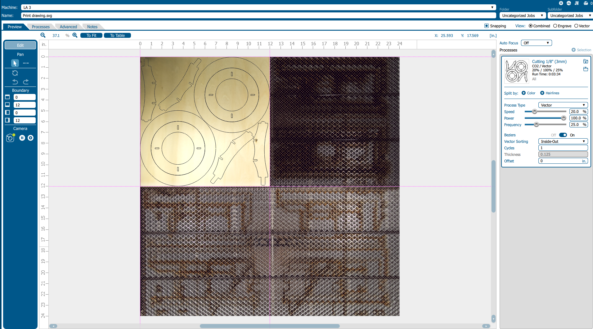
Laser software: the layout on the sheet, with the settings from the process record. The run time shown for the job is 0:03:34.
The laser cutting the parts for the shade on the LA 3, in one continuous clip that is sped up.
Kerf coupon (Step 2). The coupon is a 30 × 30 mm square (D = 30 mm). Measured with calipers, the kerf (D minus the measured width) was 0.11 mm in X and 0.19 mm in Y, so the square came out about 29.89 mm wide in X and 29.81 mm wide in Y. The full measurements are in the kerf table in the Design section.
Fit coupon (Step 3). The fit test was a small parameter study in the style of Taguchi. We cut three fit coupons with 4 labeled slots each, built from the measured thickness and kerf. Two coupons cover slot widths of 2.5, 2.6, 2.7, and 2.8 mm, and a third covers 2.8, 2.9, 3.0, and 3.1 mm. The laser adds the kerf to every slot, so each slot cuts out about 0.15 mm wider than it is drawn.
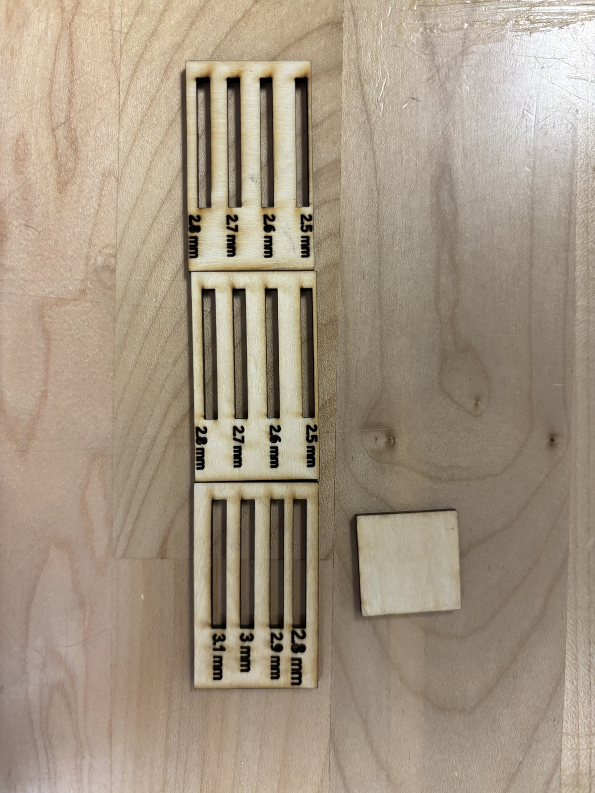
Fit coupons and kerf coupon. The labels are the drawn slot widths. The small square on the right is the kerf coupon.
The tight, target, and loose results in the table below are for the 2.5, 2.6, and 2.7 mm slots. The third coupon covers wider slots. The 2.85 mm ring slot of our first cut falls in its range, and that fit was too big.
| Slot | Drawn width | Expected cut width (drawn + 0.15 mm kerf) | Result |
|---|---|---|---|
| Tight | 2.5 mm | about 2.65 mm | Tight fit |
| Target | 2.6 mm (PlateThickness − Kerf) | about 2.75 mm, the thickness of the plate | Target fit |
| Loose | 2.7 mm | about 2.85 mm | Loose fit |
Decision (Step 4). The 2.6 mm slot gave the target fit. It is the plate thickness minus the kerf, so I used it as the final slot size, with a clearance of 0.005 mm. Our first cut had larger slots and the fit was too big, so we scaled the slots down through the parametric equations. The values before and after the change are in the Parameter Table.
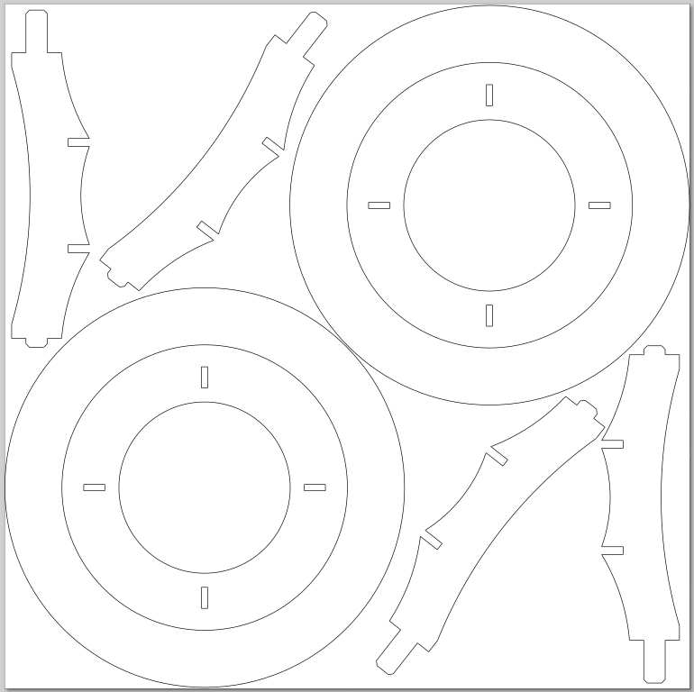
Cut path on the 12 × 12 in sheet. I made these choices for the layout:
Air assist and exhaust were both on for the whole cut. The air assist blows the smoke and debris out of the cut, and the exhaust removes the smoke from the machine.
The wood was thin enough that we could not see any taper from the laser focus on the cut edges. The edges had some soot, but it was minimal. We did not do anything extra to the edges.
The base that holds the light source is 3D printed, so this page focuses on the shade. The slicing result for the printed base parts is below.
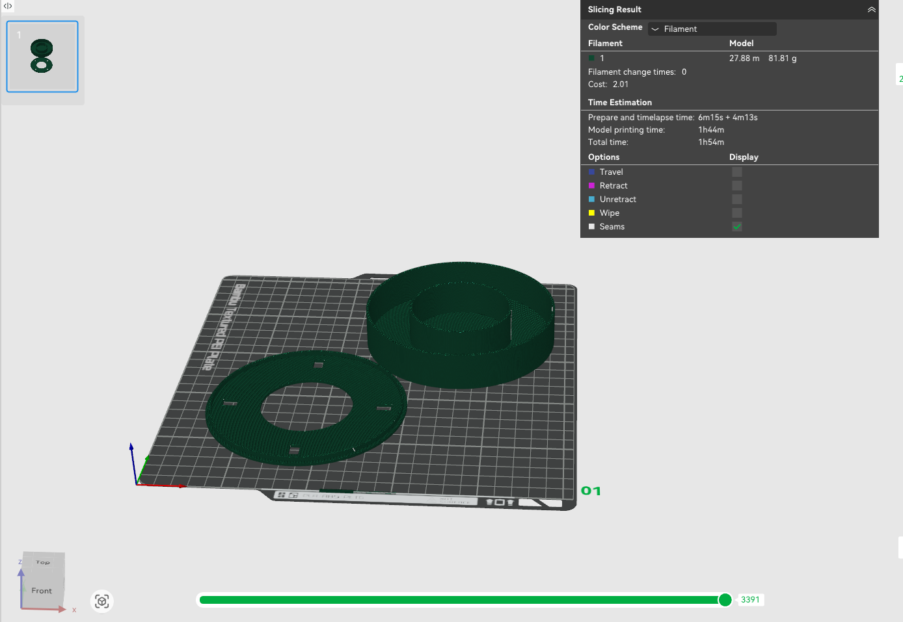
The base parts use 27.88 m of filament (81.81 g), with a model printing time of 1 hour 44 minutes and a total time of 1 hour 54 minutes.
| Date and time | Time spent | Step | What happened | Decision or change made |
|---|---|---|---|---|
| Thu–Fri, Oct 22–23, 2026 | 1.5 hours | Designing | Worked out the concept in Onshape and the hand sketch of the shade parameters: how the parts would be constrained and how everything fit on the sheet. | Four rings and curved uprights as a parametric design, driven by a small set of variables. |
| Thu–Fri, Oct 22–23, 2026 | 3 hours | CAD | Built the test design in Onshape and the final parts in SolidWorks, and set up the global variables and equations for the slots. | Replaced the test uprights with the curved column. PlateThickness was set to 2.75 mm after the final wood measured 2.70 to 2.80 mm. |
| Oct 22–26, 2026 | 30 minutes | DXF and CAD patterns | Made the DXF files and the cut layout for the sheet. | Nested each small ring inside a big ring and placed the two ring sets on the diagonal of the sheet. |
| Mon, Oct 26, 2026 | 1.5 hours | Steps 1 to 5: testing and recutting | Measured the wood (2.88, 2.80, and 2.96 mm on the first sheet) and the kerf (0.11 mm in X and 0.19 mm in Y). The fit of the first cut was too big, so we cut fit coupons with slots from 2.5 to 3.1 mm and recut. The final cut ran for 3 minutes 34 seconds on the LA 3 at 20% speed and 100% power. | Kerf of 0.15 mm on average. Scaled the slots down through the equations: ring slot to 2.605 mm and column notch to 2.60 mm, with a clearance of 0.005 mm. |
| Tue, Oct 27, 2026 | 3 hours | Step 6: portfolio page | Wrote this portfolio page. | — |
| Total: about 9.5 hours | From start to finish, which is roughly 10 hours. | |||
1. Where did my measured values differ from what I assumed, and what would have happened if I had used the assumed values? The wood was never exactly 3 mm. The first sheet measured 2.88 mm and the sheet we cut measured about 2.75 mm. The kerf also differed from the 0.10 mm in my test variable table, at 0.15 mm on average. If I had used the nominal 3 mm and ignored the kerf, I would have drawn the slot at 3.00 mm, and it would have cut out at about 3.15 mm. That is 0.40 mm wider than the 2.75 mm plate, about 15% of its thickness, and the tabs would wobble. Ignoring only the kerf, a slot drawn at 2.75 mm would have cut out at about 2.90 mm, loose by about 0.15 mm without any clearance added.
2. Using Taguchi's quality loss function, describe one joint that works but is not on target. The four slots in a small ring run in two orientations. Two have their narrow side along X, where the kerf is 0.11 mm, and two have it along Y, where the kerf is 0.19 mm. I designed all four for the average kerf of 0.15 mm, so the two slots along X cut out about 0.04 mm narrower than the target and the two along Y about 0.04 mm wider. All of them fit, but none is exactly on target. Taguchi's loss grows with the square of the distance from the target, so a deviation of 0.04 mm costs 4 times as much as one of 0.02 mm. If the part were made by the thousands, that would show up as a population of lamps where some joints are tight enough to need force and some are loose enough to wobble.
3. A real product that uses cut sheet parts joined by tabs and slots. Flat pack furniture is one. If the panels came out thicker than the slots, the customer would have to force the panels together and could crack a panel or a slot. If the panels came out thinner, or the kerf was bigger than planned, the joints would be loose and the finished piece would wobble.
4. If I had one more cut, what would I change? I would orient the slots in the small rings so that every slot has its narrow side along the same direction on the bed. All four slots would then get the same kerf, and I could use the kerf measured in that direction instead of the average of X and Y, which would put every slot on target.
SolidWorks files for the parts and assemblies, and the DXF files used for cutting. Put all of the SolidWorks files in the same folder before opening the assemblies.
AI was used to help organize this page from our group write-up, measurements, and CAD and laser software screenshots. I reviewed and edited the draft.
Tools: CO2 laser cutter (LA 3), Onshape, SolidWorks, Bambu Studio, digital calipers, and 3 mm wood sheet.